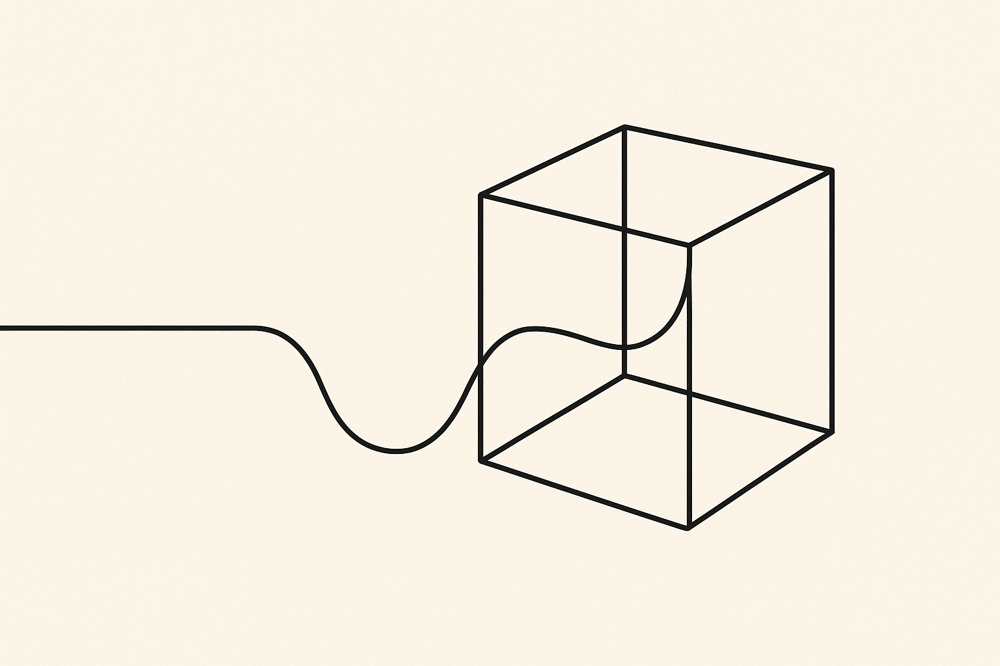
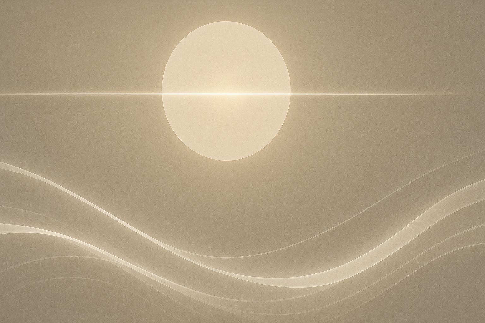
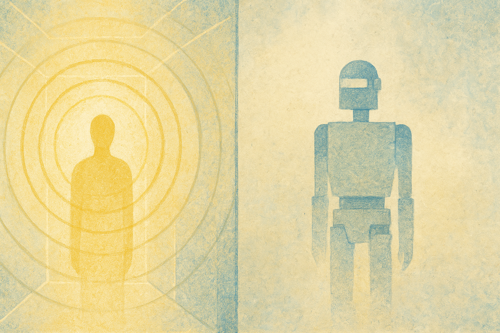
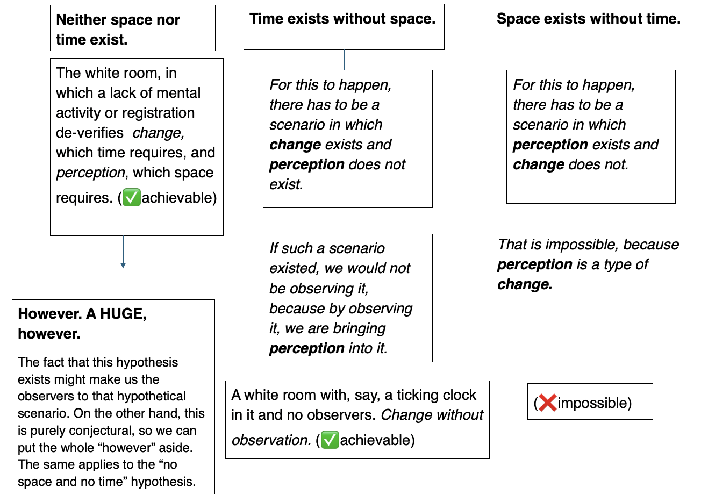
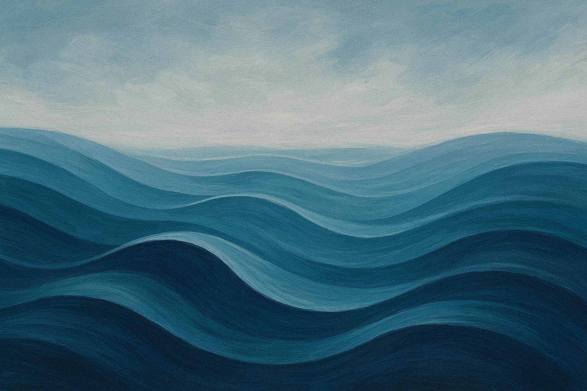

Wherever Philosophy Takes You (part 6 — final part: Time & Space)
Time & Space
Time and space are the white room in which the human experiments regarding perception are operated. In fact, perception and conceptuality are closely tied to the relationship between time and space.
There is a common belief that if perception was a cube, time would be the line, and space is what folds the lines together into coherent shapes and edges and form. I love that analogy because it is a vividly rounded outlook on the relationship between interpretated coherencies such as time and space.
However, my questions are concerning the word “time”. Time is such an incoherent, pending concept, misunderstood and untouched because perhaps it cannot be understood and it cannot be touched. This is because time does not exist. It is an aftermath value that human beings brought onto this earth, a perception to help us understand the things around us and conversely, ourselves. Many people perceive time as a straight line ticking on, inevitable, definite and defined, but what if time was a circle and we were trotting on its inner rim? Why would that belief be inferior to the belief that time is a straight line? Some people would argue that counting the minutes go by is proof for the straight progression of which the nature of time adopts, which is the same argument Victorians used to justify their belief of a flat Earth. These contradicting, chaotic perceptions already show the messiness of our understanding concerning time. Regardless, my belief stands: time is an aftermath of humankind.

Let's break down the three levels/meanings that I believe time takes on, and how they all show that time was created:
- The surface level, where time is defined by the minutes, the hours, months and quantities that each chunk of time upholds. The units are definite: a day contains twenty-four hours, an hour contains sixty minutes, a minute contains sixty seconds, et cetera et cetera….
- However, this level can clearly be refuted back to the belief that time was created. The “definite” units such as twenty-four hours or sixty minutes are merely nifty counting games from our ancestors who coupled the units of “hours” and “minutes” together into whole numbers such as twenty-four or sixty.
- The direct level, the belief that time is a straight projection onwards and that by counting “1, 2, 3, 4” or moving from one end of the room to the other, we will realize that time blunders on no matter what we do, and that moving and the changing snapshots of our everyday lives—the accumulating moments—are evidence for the passing of time.
- On the other hand, that raises a separate philosophical question: Is time dependent on change? I think it is. Imagine a white room in which there is no sense of touch, taste, smell or sound: all you see is an endless sea of white, so white that you don't know how big the room is. There is no-one in it. Not even your thoughts are active; they are simulated and non-existent. There is zero mental or physical change. In that scenario of absolute lack of change, how would we prove the existence of time? We can't, because our mentality would be inactive and we would not be able to register forwardness or stillness, making the situation irrefutably untouchable. The moment an onlooker with an active mind entered the room, time would exist, because by then mental movement (a.k.a.change) would exist. But without movement, ebbing or the tides of everyday snapshots, time cannot be proved or understood.
- Because of a), the “direct level” of number 2 is refuted: dependence on change disowns the magnanimous quality of time, making it rely on our perception.
- The more philosophical level, believing time is the revolver of our eternities and an inevitable blind spot in our visions, yet existing fundamentally. We did not create a blind spot, at least, not its science, not directly. Similarly, time is just there, irrefutable and inevitable, above the intellectual grasp of humankind and enfolding the conceptualized romances of the world, acting as a ubiquitous conceptruling the fundamentals of our perceptions.
- Keyword: perception. If time rules our perceptions, our perceptions rule time.
Overall, I think these three levels create a pyramid like this:
Of course, the pyramid is missing an essential frame: space. Let's talk about that also.

Space is the world around us, the things we touch, taste and smell, the sights and views that build our experiences and understanding. Space is a lot less conceptual than time, because our existence verifies it. The white room that I was talking about classifies as “space” in spite of the absence of time. Everywhere we go and everything we experience is upon the basis of “space”.
So how does space interconnect with time? Again, we come to the dilemma of time's dependence on change. If time was dependent on change, then space takes up a huge chunk of the material of time's fiber and becomes a requirement for its existence (since change is dependent on space). On the other hand, if time was independent away from change, then space and time become separate subjects that both pedestalize our perceptions.
If time was not dependent on change, then we would have to hypothesize a scenario in which space & (by default) change do not exist and time does. As I said, a white room without movement is still “space”. So what does the absence of space look like?
Clearly, space is everything we feel and see, in which case the absence of simulation or stableness does not destabilize the existence of space. If the physical form of a place will always be classified as space (I can't imagine a place physically not classified as space), then space would have to be defined by our own perceptions.
For example, the perception of I am here verifies the existence of the space around me. I am here shows that I am aware of the space I am in, and that I comprehend the interactions between me and that space. The understanding of being here, being somewhere at all validates the being of space, which in turn, is the basis of “here” or “somewhere”. Conversely, a robot without self-awareness or feeling does not see or register its surroundings, and therefore the world that the robot perceives does not contain space. Awareness, recognition and perception are what validate the basis of space around us. The robot, without its comprehension of sense, is nothing but a string of programming.

Let's return to the question: is time dependent on change? Looking back to the white room that I mentioned with its lack of mental activity and therefore lack of awareness, makes me realize that the white room does not classify as space after all, because there is no-one to perceive the space. In the case of the white room not classifying as space, the requirements of time and the requirement of space begin to align perfectly: mental awareness or simply, emotional activity are what verify the existence of both time and space.
Okay. So now we have whole new sets of conclusions: yes, time is dependent on change. Because it is dependent on change, it is dependent on space that acts as the basis for change. Space is dependent on personal perception. Personal perception is a type of change. Therefore, space verifies time, and vice versa. Are space and time completely co-dependent on each other, though? Here's a chart answering that question on the basis of time being dependent on change:

Overall, I think the chart above shows pretty well the relationship between time and space: space is dependent on time, and time independent of space (though questions about perception are further raised concerning time's independence). Of course, everything that I just said are entirely my opinion and only a tiny corner of the conversation about time & space.
In conclusion, time and space are two of the most vital pillars upholding humankind's understanding and sanity, rationalizing our conceptual perceptions. Their co-dependences and relationships to each other is one of the most powerful veins of philosophy, and deserving of centuries of intellectual exploration.
Water dances
So that's it! That's everything I wanted to explore about philosophy. Here are my final thoughts:
As a peculiar, petty, beautiful, brutal, flawed and altogether deeply haunting species, humankind has built by brick a civilization marred by the oblivion of its own intellectual gashes. We are our own saviors, murderers, prosecutors, executers, writers and demons, enslaved and freed by the conflict and vanity flaunting inevitably inside the different shades of our pulsing hearts. Within evil there is compassion, within beauty there is horror, within nothingness there is flames, and within the inevitable there is the ineffable. We tread and tromp and sprint about Earth, chasing passions and dreams and wants, seizing handfuls of privilege and decay and laziness. We were born without a purpose, wandering towards no-purpose, but our perceptions build the lazy illusion of purpose anyway. The ocean admires its own horizon.
Through the notes of justice we play the instrument of love, through the pedestal of time we nurture the spirit of good. Through ethical dilemmas we resolve evil, through the seduction of beauty we kiss our faiths. We are nothing to everything and everything to nothing. We live in our heads, in our stupid, pathetic dreams, wandering the periphery of space to nurture our evils. But we live. And we dance as we live.
Thales, the Greek philosopher, famously claimed that “everything was made of water”. I think that's right.
Water dances, remember?

The end of the entire 10,00 words philosphy discussion
P.S.
An important note on the section about Beauty & Love previously in this 10,000 word discussion that I posted a week ago, the beauty part: it was strongly inspired by the Webpage Beauty (Stanford Encyclopedia of Philosophy). (2022, March22). https://plato.stanford.edu/entries/beauty/
(Please check it out, it explains beauty more specifically than I did!)
P.P.S.
I was inspired by The Alchemist!!! If you haven't read it already, you should.
And a final P.P.P.S.
I decided not to post the 10,000 words together in one go since I don't want people to steal it. Not that you would. But. Yeah.